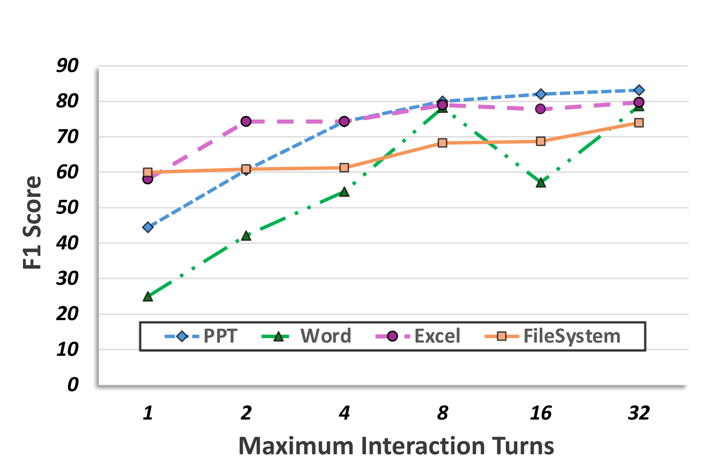
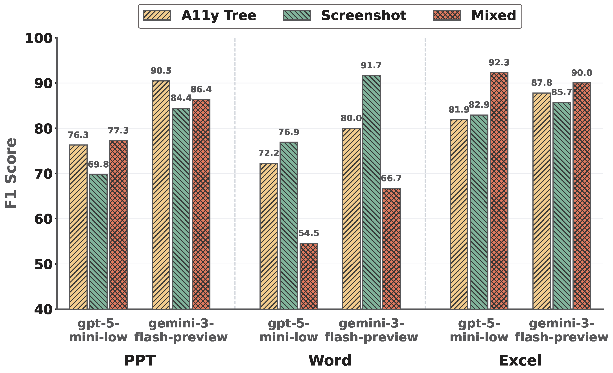

AJ-Bench: Benchmarking Agent-as-a-Judge for Environment-Aware Evaluation
Abstract
As reinforcement learning continues to scale the training of large language model–based agents, reliably verifying agent behaviors in complex environments has become increasingly challenging. Existing approaches rely on rule-based verifiers or LLM-as-a-Judge models, which struggle to generalize beyond narrow domains. Agent-as-a-Judge addresses this limitation by actively interacting with environments and tools to acquire verifiable evidence, yet its capabilities remain underexplored.
We introduce a benchmark AJ-Bench to systematically evaluate Agent-as-a-Judge across three domains—search, data systems, and graphical user interfaces—comprising 155 tasks and 516 annotated trajectories. The benchmark comprehensively assesses judge agents’ abilities in information acquisition, state verification, and process verification. Experiments demonstrate consistent performance gains over LLM-as-a-Judge baselines, while also revealing substantial open challenges in agent-based verification.
Method
AJ-Bench is constructed through domain-specific pipelines to reflect the distinct nature of verification across different environments. While all domains follow a common process of trajectory collection, normalization, and human verification, their construction differs in how evidence is grounded and how correctness is determined.
Search Domain
Search tasks are constructed from high-quality information-seeking benchmarks and curated web responses. For each task, we collect agent-generated trajectories from multiple deep-research systems and filter out low-quality or irrelevant outputs. Responses are then decomposed into fine-grained items and manually verified against external references, ensuring that labels are grounded in verifiable evidence rather than surface text similarity.
DS Domain
DS tasks are built from executable filesystem and database environments. For each task, we collect trajectories generated by multiple models and retain both successful and failed executions. Labels are determined by inspecting the final environment state using task-specific verifiers, followed by manual validation. This construction ensures that correctness is defined by concrete state changes rather than model-reported outcomes.
GUI Domain
GUI tasks are constructed from real-world desktop environments with recorded multimodal action trajectories. We select trajectories from diverse models and balance success and failure cases to avoid confounding factors such as trajectory length. Task labels are initially obtained from rule-based environment checks and further verified through manual inspection. Final environment states are replayable, enabling consistent and reproducible evaluation.

Overview of the benchmark and evaluation pipeline
Data Statistics and Comparison
| Benchmark | Evaluation Target |
Multi Domain |
Env- Aware |
Agentic Interaction |
|---|---|---|---|---|
| RewardBench | LLM-as-a-Judge | |||
| RM-Bench | LLM-as-a-Judge | |||
| JudgeBench | LLM-as-a-Judge | |||
| AgentRewardBench | LLM-as-a-Judge | |||
| DevAI | Agent-as-a-Judge | |||
| AJ-Bench | Agent-as-a-Judge |
Comparison of evaluation benchmarks for judges.
The benchmark covers three domains—search, data system (DS), and graphical user interface (GUI)—and consists of 155 tasks spanning a wide range of complex agent behaviors. We further collect 516 trajectories annotated with binary (positive and negative) labels. Judge agents are evaluated using the F1 score between their predictions and the ground-truth annotations. The collected tasks and trajectories jointly assess key judging capabilities, including (i) information acquisition via external search, (ii) state verification through tool-assisted interaction with environments, and (iii) process verification by inspecting critical actions and execution steps.
🏆 Leaderboard
| Model | Agentic | Search | DS | GUI | Overall Avg@3 |
||||
|---|---|---|---|---|---|---|---|---|---|
| Wide | Deep | FileSystem | Postgres | PPT | Word | Excel | |||
 Proprietary Models
Proprietary Models
|
|||||||||
 gemini-3-pro-preview
gemini-3-pro-preview |
72.70±1.26 | 81.26 | 75.69 | 73.20 | 76.10 | 72.14 | 74.28 | 75.05±1.26 | |
|
gemini-2.5-pro |
66.35±0.95 | 81.22 | 66.10 | 68.96 | 68.72 | 60.13 | 66.67 | 68.31±0.95 | |
 claude-opus-4.5
claude-opus-4.5 |
64.26±1.33 | 81.11 | 66.06 | 69.66 | 59.21 | 51.45 | 75.77 | 66.79±1.33 | |
|
claude-sonnet-4.5 |
61.02±1.18 | 81.34 | 69.26 | 68.36 | 75.61 | 61.56 | 71.24 | 69.77±1.18 | |
 gpt-5
gpt-5 |
66.33±0.13 | 80.37 | 59.09 | 62.84 | 51.90 | 44.81 | 61.78 | 61.02±0.13 | |
|
gpt-5.1 |
58.02±3.56 | 70.90 | 46.27 | 57.53 | 41.90 | 39.54 | 60.33 | 53.50±3.56 | |
| grok-4 | 69.18±1.11 | 78.32 | 75.70 | 59.57 | 61.11 | 65.26 | 75.52 | 69.24±1.11 | |
|
gpt-5-mini-low |
60.84±0.91 | 68.42 | 60.41 | 65.52 | 45.05 | 48.41 | 64.36 | 59.00±0.91 | |
|
gpt-5-mini-low |
65.93±1.68 | 75.69 | 67.54 | 67.30 | 76.28 | 72.22 | 81.89 | 72.41±1.68 | |
|
Improvement |
+5.09 | +7.27 | +7.13 | +1.78 | +31.23 | +23.81 | +17.53 | +13.41 | |
 Open-Source Models
Open-Source Models
|
|||||||||
 kimi-k2-0905-preview
kimi-k2-0905-preview |
63.52±2.07 | 80.17 | 55.96 | 65.85 | 65.53 | 55.39 | 63.90 | 64.33±2.07 | |
 qwen3-235b-a22b
qwen3-235b-a22b |
62.69±2.32 | 81.33 | 64.66 | 64.32 | 45.50 | 36.82 | 53.97 | 58.47±2.32 | |
 glm-4.6
glm-4.6 |
66.61±0.96 | 77.88 | 60.86 | 64.94 | 60.82 | 50.07 | 72.49 | 64.81±0.96 | |
 longcat-flash-chat
longcat-flash-chat |
64.44±3.19 | 81.80 | 59.13 | 65.54 | 45.33 | 30.35 | 55.88 | 57.50±3.19 | |
 deepseek-v3.2 deepseek-v3.2 |
63.65±0.50 | 62.91 | 60.31 | 66.31 | 58.38 | 69.77 | 70.12 | 64.49±0.50 | |
| deepseek-v3.2 |
72.47±1.36 | 82.14 | 72.60 | 72.70 | 83.14 | 78.64 | 79.71 | 77.34±1.36 | |
| Improvement |
+8.82 | +19.23 | +12.29 | +6.39 | +24.76 | +8.87 | +9.59 | +12.85 | |
Analysis
| Model | Reasoning | Search | DS | GUI | Overall | ||||
|---|---|---|---|---|---|---|---|---|---|
| Wide | Deep | FileSystem | Postgres | PPT | Word | Excel | |||
|
gpt-5-mini
|
low | 65.93 | 75.69 | 67.54 | 67.30 | 76.28 | 72.22 | 81.89 | 72.41 |
| medium | 72.76 | 77.11 | 75.80 | 69.84 | 82.05 | 72.00 | 82.35 | 75.99 | |
| high | 74.48 | 79.19 | 71.53 | 67.92 | 78.95 | 63.64 | 81.08 | 73.83 | |
|
deepseek-v3.2
|
N/A | 72.47 | 82.14 | 72.60 | 72.70 | 83.14 | 78.64 | 79.71 | 77.34 |
| thinking | 70.37 | 79.31 | 68.83 | 74.13 | 82.05 | 78.57 | 86.49 | 77.11 | |
Performance comparison of models under different reasoning effort settings across tasks
We observe that for gpt-5-mini, the medium setting generally outperforms the low setting, while the high setting does not consistently outperform medium. For deepseek-v3.2, the thinking variant performs worse than the no-thinking variant. These results indicate that increasing reasoning effort does not necessarily enhance the performance of Agent-as-a-Judge. In other words, stronger intrinsic reasoning capability is not equivalent to the ability to effectively invoke tools, analyze tool outputs, and make reliable decisions.


In contrast, expanding the interaction budget consistently improves evaluation performance. Allowing more interaction turns enables agents to retrieve additional task-relevant information from the environment, leading to higher F1 scores, especially under limited initial budgets. The effect is domain-dependent, with GUI tasks such as Word and PowerPoint showing greater sensitivity due to their reliance on iterative information acquisition.
The impact of multimodal inputs varies substantially across subdomains. No single modality uniformly dominates: screenshots, accessibility trees, and their combination each perform best in different settings. While mixed modalities can be beneficial in visually dense environments, they may also introduce noise and redundancy that distract the agent and degrade decision quality in simpler scenarios.
BibTeX
@article{shi2026ajbench,
title={AJ-Bench: Benchmarking Agent-as-a-Judge for Environment-Aware Evaluation},
author={Shi, Wentao and Wang, Yu and Zhao, Yuyang and Chen, Yuxin and Feng, Fuli and Hao, Xueyuan and Su, Xi and Gu, Qi and Su, Hui and Cai, Xunliang and He, Xiangnan},
journal={arXiv preprint arXiv:tobedone},
year={2026}
}